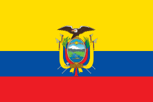

EQUADOR
Quantas copas já participou?
- 1930 a 1938 - Não participou
- 1950 - Desistiu
- 1954 a 1958 - Não participou
- 1962 a 1998 - Não se classificou
- 2002 - Eliminada na 1ª Fase
- 2006 - Eliminada nas Oitavas de final
- 2010 - Não se classificou
- 2014 - Eliminada na 1ª fase
- 2018 - Não se classificou
- 2022 – classificada
Quais premiações alçancou nas copas do mundo
- 2002 – Eliminada na 1 fase
- 2006 – Eliminada na oitavas
- 2014 – Eliminada na 1 fase
Seleção Tecnica :
Tecnico
Pricipais joagadores
- Ortiz
- Ramirez
- Dominguez
- Galindez
- Hincapie
- Arreaga
- Arboleda
- Palácios
- Torres
- Preciado
- Romario
- Poroza
- Estupiñán
- Franco
- Moises
- Méndez
- Cifuientes
- Carcelen
- Rojas
- Corozo
- Gruezo
- Preciado
- Mena
- Reasco
- Estrada
- Jordy
- Valecia
- Aron rodriguez
21/11
Qatar X Equador
25/11
Holanda X Equador
29/11
Equador X Senegal
(1)
(2)